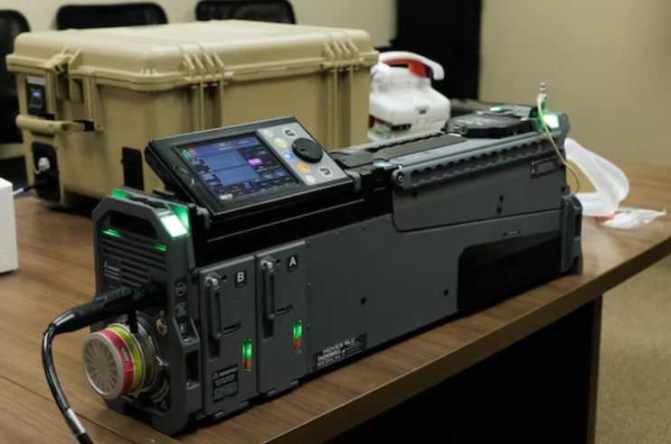

U.S. NAVY ·
Expeditionary Medical Systems: Increasing Warfighter Survivability in Littoral Combat
Read the original
Four years into Force Design, the Corps is continuing to modernize and restructure to become a more nimble, technologically advanced force. Driven by extensive wargaming and campaigns of learning, this strategic transformation is creating an expeditionary force capable of operating effectively in contested environments along key maritime regions.
In this era of renewed great power competition, the casual reader might not expect the conversation to revolve around medical systems. Yet, Marine Corps Systems Command's Expeditionary Medical Systems team is at the forefront of a pivotal shift – working tirelessly to increase the warfighter’s battlefield survivability-- and thus, lethality.
“The Expeditionary Medical Team handles Class VIIIA medical supplies and equipment,” Navy CAPT Janine Espinal, EMS team lead and senior medical logistician, recently explained. “We support Role 1 and Role 2 capabilities, which encompass a range of medical services such as battlefield surgery, trauma care, resuscitation, and a full spectrum of other medical capabilities available in the field."
Enhancing survivability
Under Force Design’s strategic blueprint for modernization, the EMS team’s contribution is pivotal in enhancing medical support and operational readiness, especially within contested operational environments. Their efforts stand to grant Marines the crucial capability to survive longer while awaiting evacuation, significantly bolstering their resilience and effectiveness in challenging situations.
According to Espinal, “Our team is focusing on prolonged casualty care, which involves keeping patients stable for potentially days in contested areas while awaiting medical evacuation. Our efforts include enhancing our medical capabilities to be more scalable and agile, particularly in staging patients and providing necessary health support amid Expeditionary Advanced Base Operations, or EABO.”
Key to this effort are the Damage Control Resuscitation, or DCR, and Damage Control Surgery, DCS, capabilities. These lifesaving systems are the latest additions to the Family of Field Medical Equipment, tailored for Marines and Sailors engaged in EABO – a strategic doctrine that involves establishing temporary, agile forward bases that support naval operations, missile defense, and other critical functions.
Within this context, DCR/DCS capabilities are notable for their compact, modular design, which not only makes them lighter and more agile, but also enables smaller medical teams to provide essential care close to the front lines in contested areas. As a crucial component of Role 2 casualty care, these sets enable effective medical support with fewer personnel. By placing life-saving medical care nearer to operating forces in challenging environments, these capabilities significantly enhance the survivability and resilience of our nation’s combat forces.
As noted by Mark Urrutic, EMS senior project officer and subject matter expert, "We've developed a modular medical kit for small, agile teams, crucial for distributed maritime operations. It enables a 10-person team to simultaneously treat surgical and non-surgical patients. Designed for rapid deployment and management, this kit supports teams in isolated environments, equipping them to sustain patients longer in contested areas where evacuation is challenging."
Adaptability and testing
Ultimately, the team’s focus on adaptability and rapid response is not just theoretical but rigorously tested and refined through comprehensive experimentation, wargaming, and exercises. These activities enable the team to employ a data-driven approach, integrating insights and feedback from Marines directly engaged in field operations, thereby ensuring the capability evolves in alignment with empirical evidence and real-world demands.
In partnership with the Marine Corps Warfighting Laboratory, or MCWL, the team is participating in crucial exercises, including Valiant Shield in Hawaii, Global Medic at Fort McCoy, Wisconsin, and Resolute Dragon in Okinawa. These exercises are essential in testing and evaluating the capabilities of our DCR/DCS sets, thereby enhancing the readiness and effectiveness of our medical systems in various operational environments.
Furthermore, the incorporation of direct feedback from Marines and Sailors is crucial in guiding the team's decision-making processes. This approach is exemplified in the enhancement of prototyping processes, as seen in the CENTCOM-conducted exercise, Intrepid Maven. This exercise, a collaborative effort with the theater joint program, focused significantly on testing the TRV 150, an autonomous logistics delivery system.
"The feedback provided by the CENTCOM surgeon, which highlighted the successful implementation of autonomous logistics delivery in austere environments, was particularly instrumental," said Espinal. "Such accomplishments demonstrate the practical effectiveness of our medical capabilities in challenging settings. They also represent a significant stride in advancing the field, directly informed by user experiences and needs."
But there are yet more capabilities on the horizon.
What the future holds
Presently, the EMS team-- in collaboration with Marine Corps Combat Development and Integration-- is diligently working on introducing three new capabilities, with the aim of securing funding and potential fielding in FY 26. These include patient staging and holding, role one enhanced, and role two enhanced.
The first capability, known as 'patient staging and holding,' is purpose-built for rapid deployment in expeditionary environments. Its primary function is to provide a staging area for casualties awaiting movement either back to CONUS or to nearby role three facilities.
The second capability, 'role one enhanced,' is specifically designed to bolster the support for corpsmen stationed in forward field positions. These highly trained corpsmen are responsible for delivering critical trauma care in situations where advanced medical providers are not available.
Finally, the third capability, 'role two enhanced,' is geared towards the consolidation of casualties from various forward battalion aid stations and DCR/DCS teams. This strategic consolidation facilitates follow-on surgical care and further streamlines the entire medical support process."
Together, these efforts are part of a broader strategy to enhance the Marines' ability to operate in smaller, more independent units, aligning with the overarching objectives of Force Design.
In speaking with the team, it becomes evident that their unwavering commitment to delivering the highest caliber of healthcare to the warfighter, even in the most challenging operational settings, permeates every facet of their mission, emphasizing the central tenet of ensuring the well-being of Marines on the battlefield.
According to Urrutic, “Having served alongside the Marine Corps in garrison and combat zones, I often wondered how these life-saving technologies found their way to the front lines. We closely collaborate with Marine Corps experts in the field, valuing their feedback to provide life-saving equipment. My dedication is rooted in ensuring Marines and Sailors receive the best gear to save lives. It's what fuels my passion after 30 years of service – putting the best gear in our warfighters' hands.”
As we prepare to face our adversaries on the modern battlefield, the EMS team's unwavering commitment to innovation and excellence serves as an inspiring beacon – tirelessly pursuing cutting-edge medical capabilities which enhance survivability – allowing the warfighter to complete his mission and come home safely. In the face of evolving challenges, the EMS team stands as a testament to dedication and resilience, ensuring that our heroes receive the care they deserve.